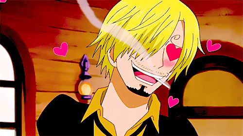

Who is Sanji?
Sanji is a major character in the long-running manga and anime series One Piece. He is a member of the Straw Hat Pirates and serves as their cook, often referred to as the "Black Leg" due to his signature fighting style. Sanji is a suave and charismatic character who is often seen smoking a cigarette and wearing a stylish suit. He is also known for his chivalry towards women, which sometimes puts him at odds with his fellow crew members.
Sanji's backstory is tragic and complex, and it is revealed throughout the series. He was born into a family of notorious underworld assassins known as the Vinsmokes, but he rejected his family's way of life and instead pursued his dream of becoming a chef. As a result, he was disowned by his family and forced to live on his own. Despite this difficult past, Sanji remains upbeat and optimistic, and his loyalty to his friends is unwavering.
In battle, Sanji is a formidable fighter who uses his powerful kicks to devastating effect. He is also a skilled tactician who is often able to outsmart his opponents. Sanji has a number of powerful techniques, including "Diable Jambe," which allows him to ignite his leg with flame and increase its power, and "Sky Walk," which enables him to run on air. Despite his impressive abilities, Sanji's greatest strength lies in his unwavering determination and his willingness to sacrifice himself for his friends.